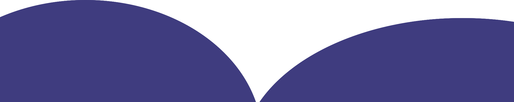
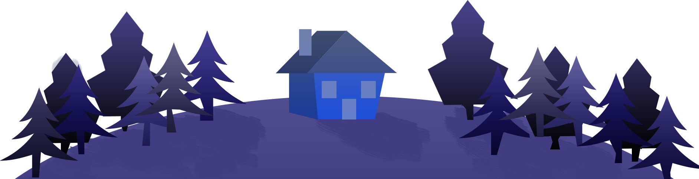

PORTFOLIO
SEBASTIAN KOLAŃSKI
O MNIE
NAZYWAM SIE SEBASTIAN KOLAŃSKI,
JESTEM STUDENTEM UNIWERSYTETU RZESZOWSKIEGO,
ODKĄD PAMIĘTAM INTERESUJĘ SIĘ GRAFIKĄ I RYSOWANIEM
W DALSZEJ CZĘŚCI CHCIAŁBYM PRZEDSTAWIĆ KILKA SWOICH PRAC

